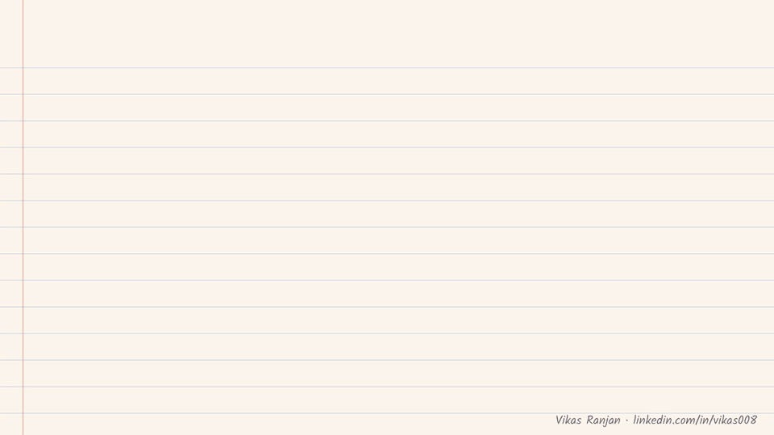
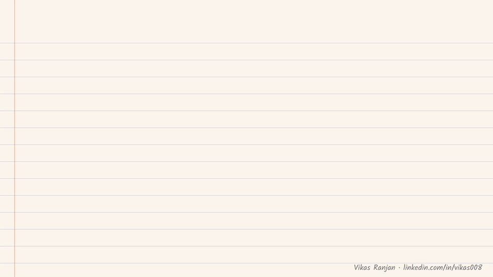
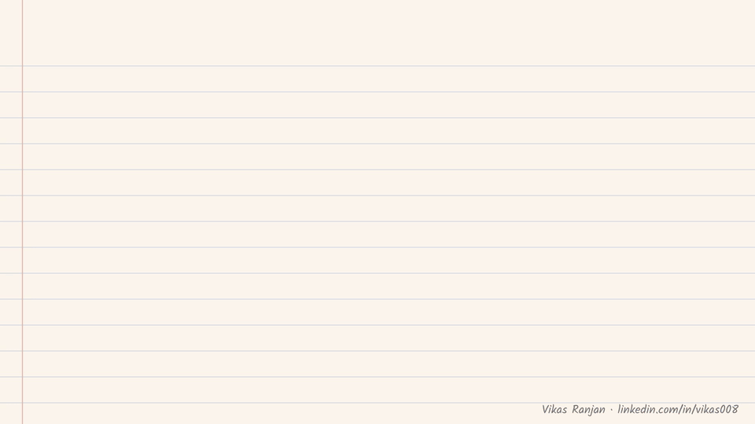
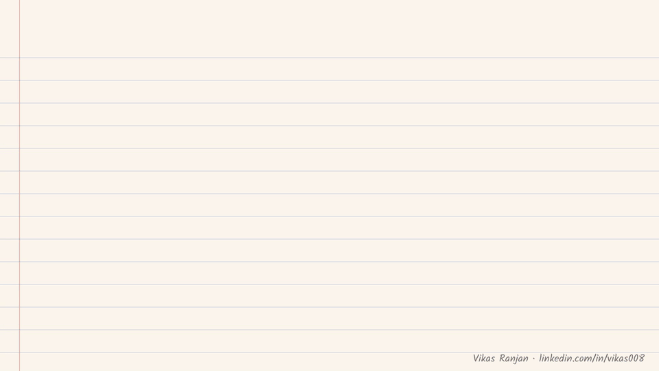

Chapters 1 to 4: stateless LLMs, the illusion of memory, replay cost, context windows, lost in the middle. Typed notes · Handwritten PDF
A language model forgets everything the moment it answers. These notes explain where the "memory" really comes from, why the obvious fixes break, and what real memory systems do instead.
A raw LLM is a stateless pure function. Tokens go in, one forward pass runs, and out comes a probability distribution over the next token. Then it is done.
None of the weights change during a conversation. The model has no scratchpad, no sense of time, and no memory of you.

rememberAfter it returns an answer, the model keeps nothing.
Tell a chatbot your name, and three or four turns later it can still say it back. It feels like memory. It isn't.
On every turn, the app sends the whole conversation so far back to the model. The model reads your name again each time. Open a fresh session and the trick disappears.

rememberThe memory lives in the chat history, not in the model.
Replaying the whole chat has two consequences:

Each turn adds about 100 tokens (the first one 50, as in the notes). The window holds 128K tokens.
rememberReplay is quadratic in cost and still forgets once the window is full.
A bigger window only delays the problem. Every turn still resends everything, so the cost stays quadratic.
It also creates a new problem. If only 3 messages out of 128K tokens matter, the model's attention is spread across everything else. Important details get lost in the middle.

rememberSending more text dilutes attention. Bigger is not better.
The way out is to keep memory outside the model and send in only what is relevant to the current question.
more on how the picking works in the next notes…